英雄传说：闪之轨迹IV·完美攻略·终版（完结）
英雄传说：闪之轨迹IV完美攻略·终版
出品：浅闻小鉴攻略组
作者：夏浅线。
文本精校：Mr.Μǎ Lip
盐之桩A
特殊回复装置：2个
机关：1个
宝箱4个：U物质10个·全回复药·精灵香·力量药水II/守护药水II/心灵药水II各1个
本区域新敌人共5个：深渊灵体·绯红兜帽·鹦鹉贝·斯库拉曼姆·地狱该姆
记得收集情报
盐之桩A·最深处
走到红色感叹号处·触发剧情
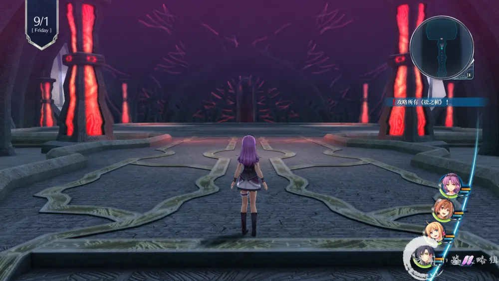
盐之桩B
特殊回复装置：2个
机关：1个
宝箱4个：七种耀晶片各200个·勇气种子·还魂粉·EP填充剂IV
本区域新敌人共6个：隐匿邪虫·龙人族·杖·龙人族·剑·杀戮鳞龙·毒液邪虫·无头守卫
记得收集情报
盐之桩B·最深处
走到红色感叹号处·触发剧情
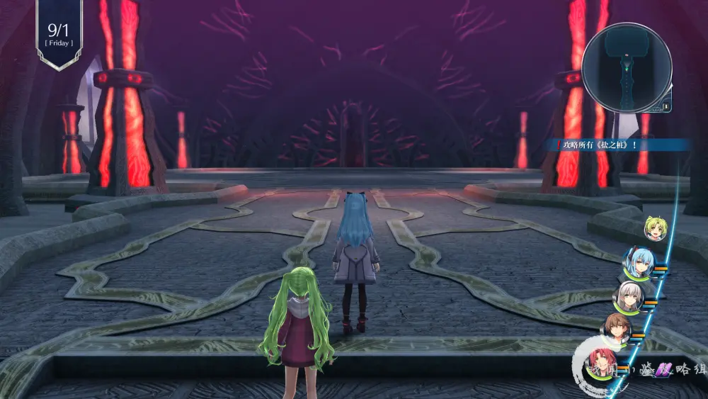
盐之桩C
特殊回复装置：2个
机关：1个
宝箱4个：EP填充剂IV·圣灵药·改·还魂胶囊
生命露水/力量露水/守护露水/魔力露水/心灵露水各1个
本区域新敌人共6个：战术壳原型机S·轻松扳机S·原初巨人·军舰虫·叹息之柩·贝沃
器官使魔S
记得收集情报
盐之桩C·最深处
走到红色感叹号处·触发剧情
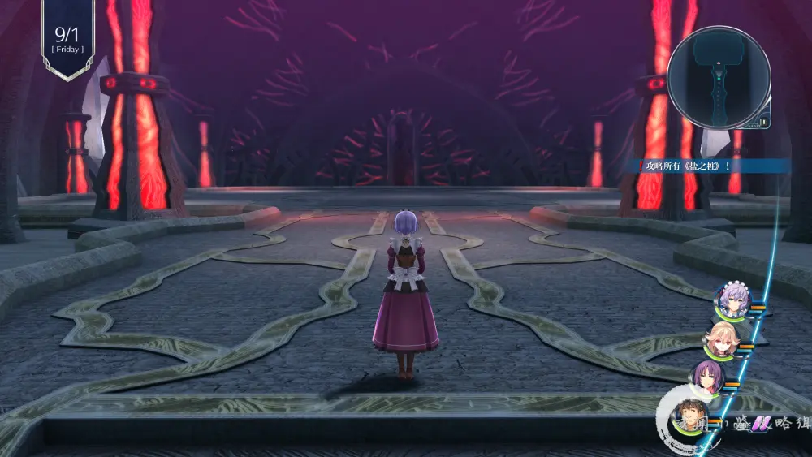
盐之桩D
特殊回复装置：2个
机关：1个
宝箱4个：七种耀晶片各200个·勇气灵魂·圣灵药·改
力量药水II/守护药水II/心灵药水II各1个
本区域新敌人共6个：盘旋掌命者·妖精王·标靶探查者·叶德蝠·异魔叶德·大理石人偶
记得收集情报
盐之桩D·最深处
走到红色感叹号处·触发剧情
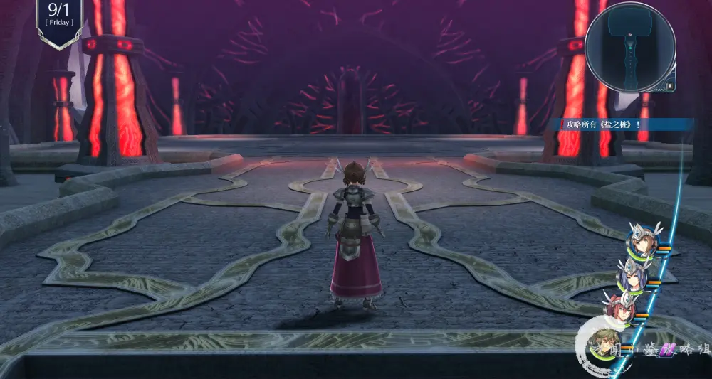
盐之桩E
特殊回复装置：2个
机关：1个
宝箱4个：U物质10个·全回复药·生命露水/力量露水/守护露水/魔力露水/心灵露水各1个
龙神香
本区域新敌人共6个：雨天使·炎天使·毒天使·千手卫兵·翼蜥眼·巨型邪眼魔
记得收集情报
盐之桩E·最深处
单独存档！！！·走到红色感叹号处·触发剧情·五连战
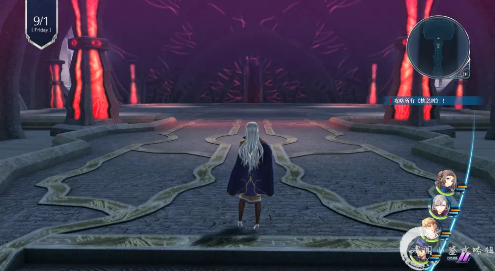
盐之桩·最深处
本区域新敌人共5个：神机永世γII·黑影型·击之阔步者·神机永世βII·尖兵型·死灵战机
神机永世αII·赤电型
记得收集情报
幻想机动要塞
幻想机动要塞·外围
特殊回复装置：1个
★走到蓝色星号处·调查·获得：黑塞姆利亚矿的碎片
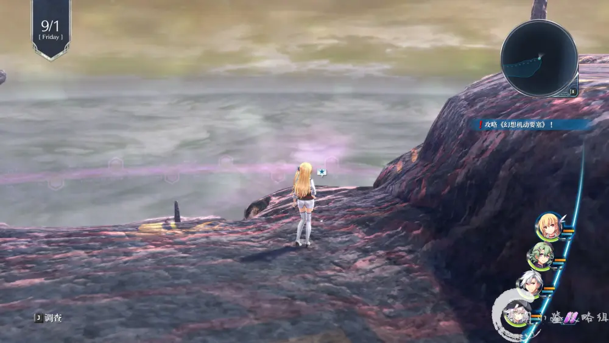
幻想机动要塞·入口
机关：1个
宝箱2个：精灵香·勇气种子
本区域新敌人共2个：诅咒炼狱·歌利亚·露
记得收集情报
幻想机动要塞·小庭园
特殊回复装置：1个
进入幻想机动要塞·回廊A
幻想机动要塞·回廊A
机关：1个
宝箱3个：魔王珠（回路）·圣灵药·改·煌靴阿卡斯
本区域新敌人共2个：麻痺邪虫·邪虫女王
记得收集情报
幻想机动要塞·回廊A最深处
特殊回复装置：1个
本区域新敌人共2个：克蕾雅少校·雷克特少校
记得收集情报
走到红色感叹号处·触发剧情·战斗
队伍要求：黎恩/亚修/亚尔缇娜·三位成员要在战斗位
战斗后剧情
★剧情获得克蕾雅少校人物信息：克服黄昏之后
★剧情获得雷克特少校人物信息：秘密的觉悟
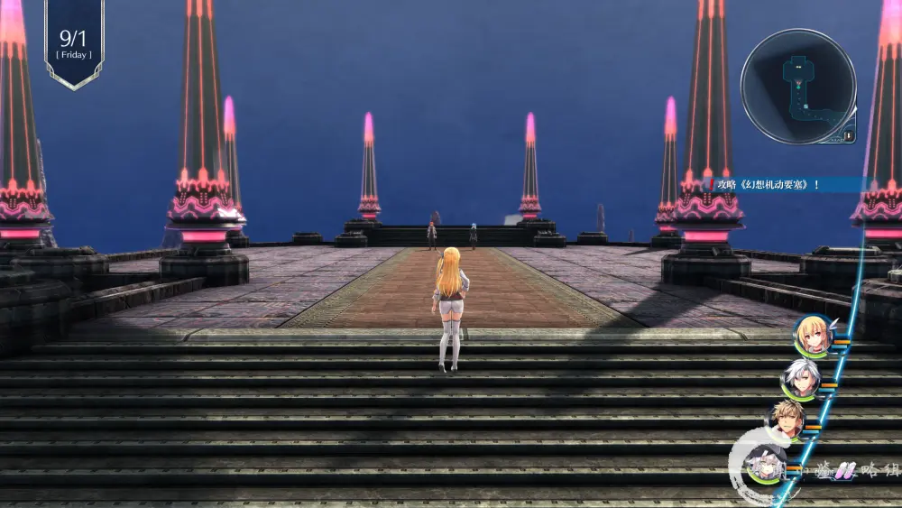
快速移动到幻想机动要塞·小庭园·触发剧情
幻想机动要塞·小庭园
和地图内的绿色星号处的人物·全部对话
幻想机动要塞·回廊B
机关：2个
宝箱5个：全回复药·修复石/激发石/勇气石/苏生石各1个·辉甲诺伦·星杯挂坠（饰品）
还魂胶囊
本区域新敌人共2个：恶魔触手·丘拉索斯库拉
记得收集情报
幻想机动要塞·回廊B最深处
特殊回复装置：1个
本区域新敌人共2个：赛德利克皇太子·战鬼谢莉
记得收集情报
走到红色感叹号处·触发剧情·战斗
队伍要求：黎恩/克洛/库尔特/要在战斗位
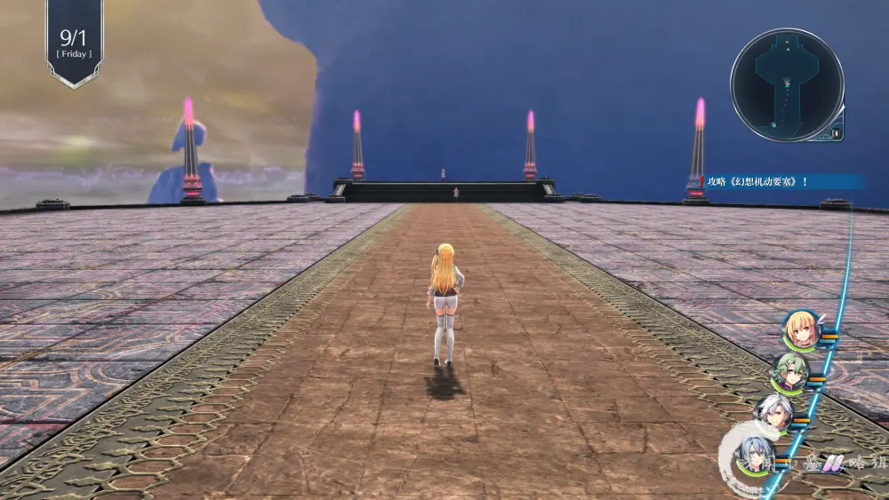
第二场战斗·骑神战
绯之骑神特斯塔·罗莎
正常状态下：头部
武器在身前斜上指驱动状态下：身体
武器在身侧前指驱动状态下：手臂
武器在身侧前下指驱动状态下：身体
武器在身侧横指驱动状态下：手臂
魔煌机兵梅尔基亚·枪
正常状态下：身体
驱动状态下：手臂
魔煌机兵梅尔基亚·剑
正常状态下：头部
驱动状态下：头部
战斗后剧情
★剧情获得库尔特人物信息：皇太子之友
★走到蓝色星号处·调查·获得：黑塞姆利亚矿的碎片
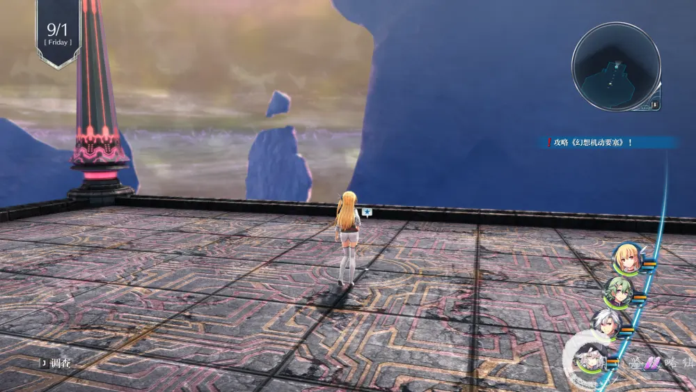
快速移动到幻想机动要塞·小庭园·触发剧情
幻想机动要塞·小庭园
和地图内的绿色星号处的人物·全部对话
捷欧对话·获得：水银鲤
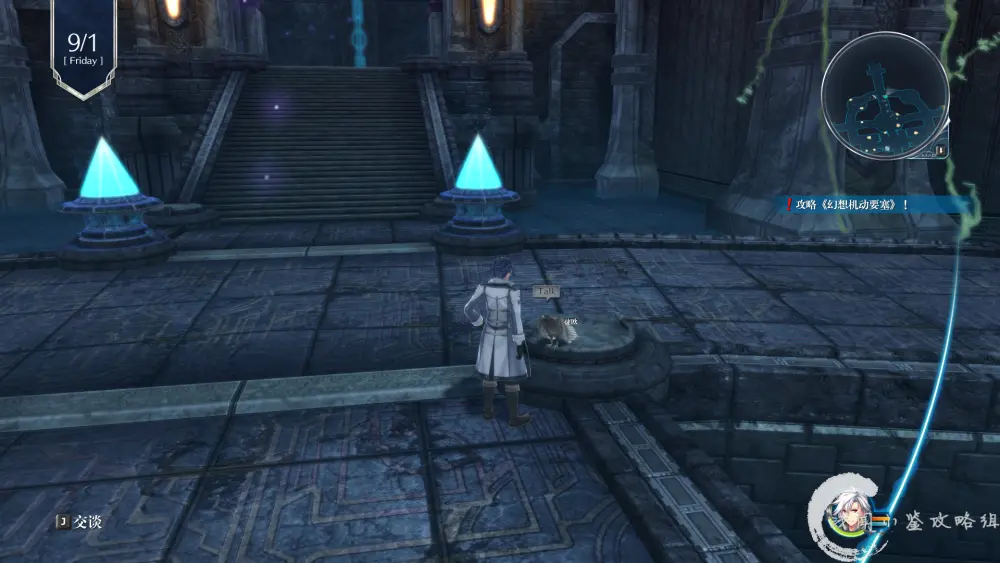
全部结束后·走到升降器处·启动
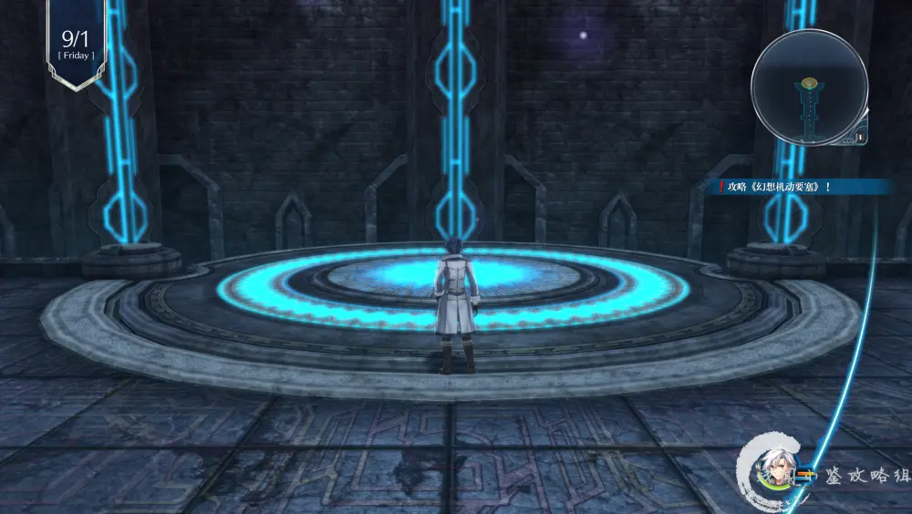
幻想机动要塞·回廊C
机关：1个
宝箱5个：闪甲奥德·全回复药·七剑珠（回路）·洸靴卡利斯托·龙神香
本区域新敌人共4个：恶魔之眼·奈亚托拉提普·芬迪亚斯·努亚达·黑暗邪眼魔
记得收集情报
幻想机动要塞·回廊C中间
特殊回复装置：1个
本区域新敌人共3个：根源玛丽亚贝尔·小丑肯帕雷拉·器官使魔
记得收集情报
走到红色感叹号处·触发剧情·战斗
队伍要求：尤娜·尤娜要在战斗位
战斗后剧情
★剧情获得尤娜人物信息：另一个重心
快速移动到幻想机动要塞·小庭园
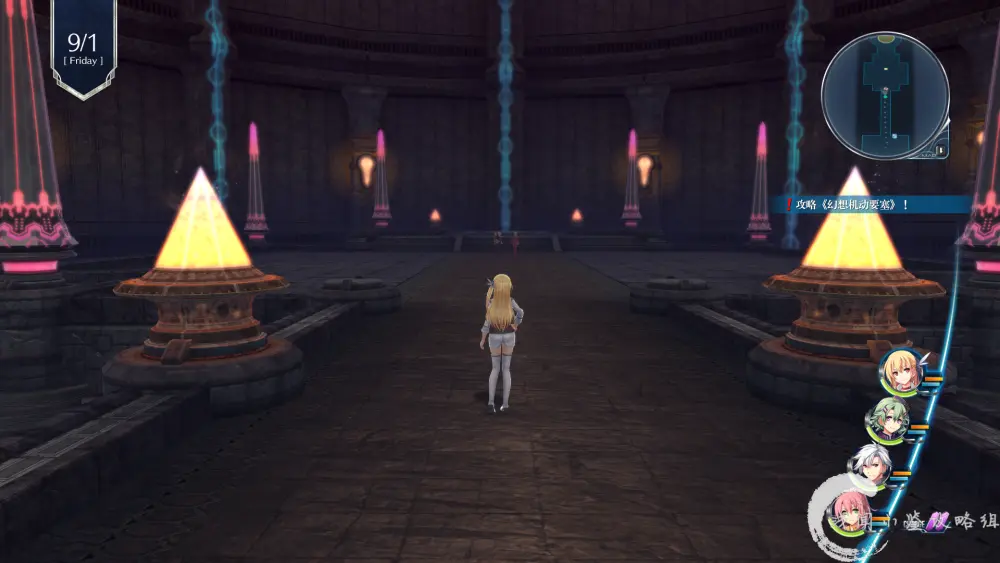
幻想机动要塞·小庭园
和地图内的绿色星号处的人物·全部对话
快速移动到幻想机动要塞·回廊C中间
幻想机动要塞·回廊C中间
全部结束后·走到升降器处·启动
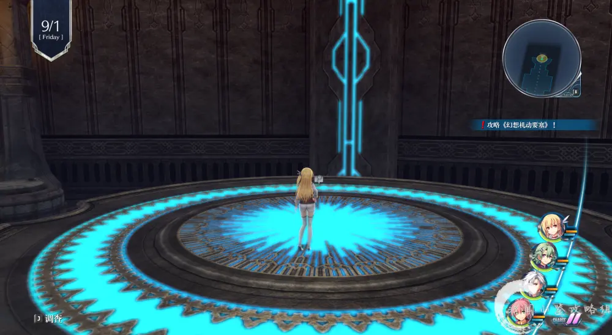
幻想机动要塞·回廊C上层
机关：1个
宝箱5个：勇气灵魂·修复石/激发石/勇气石/苏生石各1个·精灵香·幻狼珠（回路）
还魂胶囊
本区域新敌人共2个：境界巡回者·阿鲁卡德·贝沃
记得收集情报
走到升降器处·启动
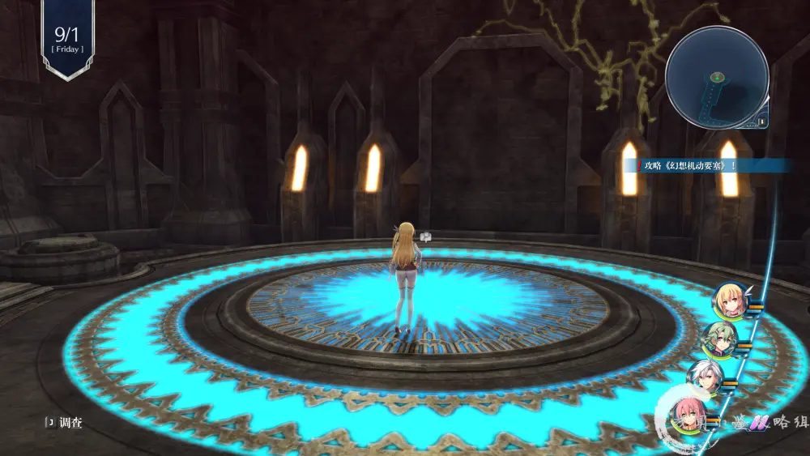
幻想机动要塞·回廊C最深处
特殊回复装置：1个
本区域新敌人共2个：黑之艾尔贝里希·卢法斯总督
记得收集情报
走到红色感叹号处·触发剧情
队伍要求：亚莉莎/尤西斯·两位成员要在战斗位
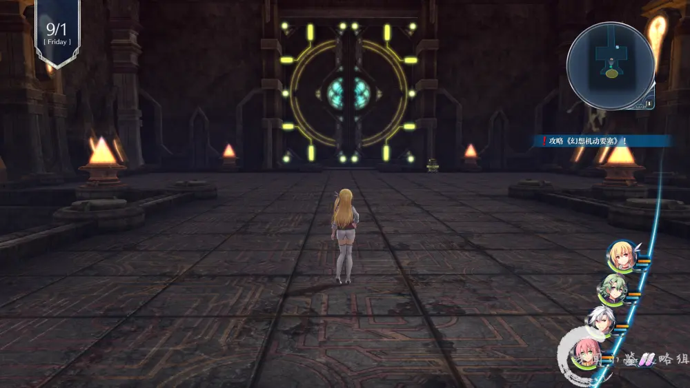
走到红色感叹号处·触发剧情·战斗
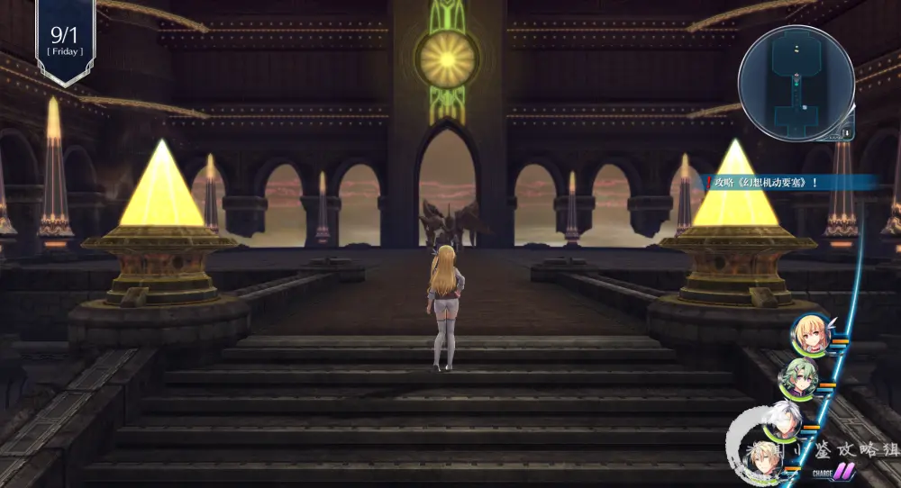
第二场战斗·骑神战
金之骑神埃尔·普拉多
正常状态下：手臂
武器在身侧横指驱动状态下：手臂
武器立于身前驱动状态下：头部
武器在身侧横前指驱动状态下：身体
魔煌机兵莫德雷德
正常状态下：手臂
驱动状态下：头部
魔煌机兵汉尼拔
正常状态下：手臂
驱动状态下：手臂
战斗后剧情
★剧情获得尤西斯人物信息：与兄长做出了结
★剧情获得亚莉莎人物信息：一丝希望
★走到蓝色星号处·调查·获得：黑塞姆利亚矿的碎片
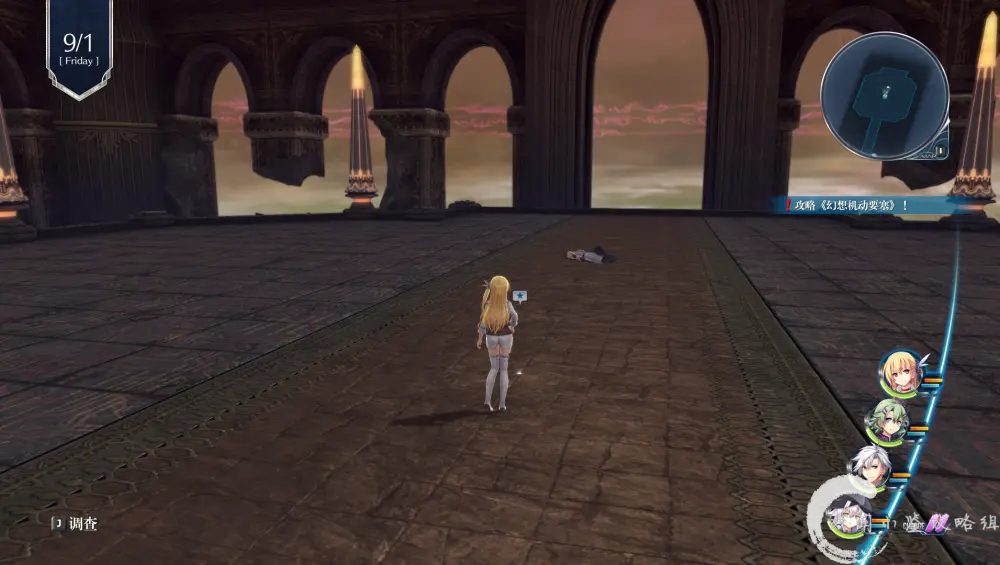
快速移动到幻想机动要塞·小庭园·触发剧情
幻想机动要塞·小庭园
和地图内的绿色星号处的人物·全部对话
全部结束后·走到红色感叹号处·触发剧情·和伙伴一起搭乘升降器
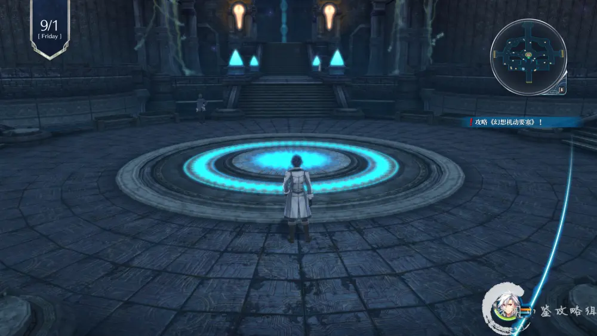
幻想机动要塞·中枢
机关：1个
宝箱5个：圣灵药·改·还魂粉·EP填充剂IV·勇气种子·龙神香
本区域新敌人共5个：玛哈蝠·异魔玛哈·亚蒙·邪念恶魔·怨毒安斯尔特
记得收集情报
幻想机动要塞·中枢中间
特殊回复装置：1个
本区域新敌人共1个：魔神马克邦
记得收集情报
走到红色感叹号处·触发剧情
队伍要求：艾玛·艾玛要在战斗位
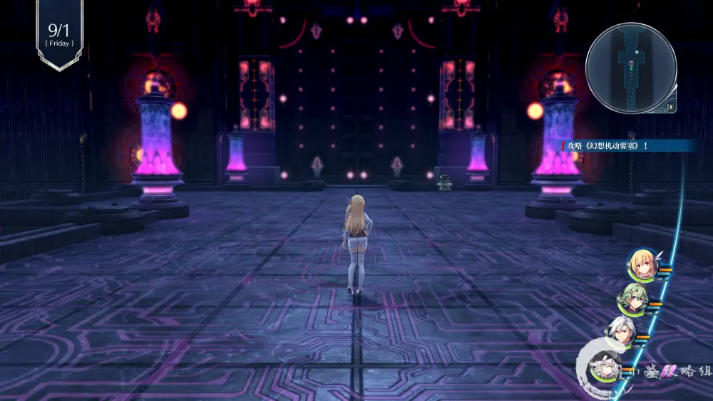
走到红色感叹号处·触发剧情·战斗
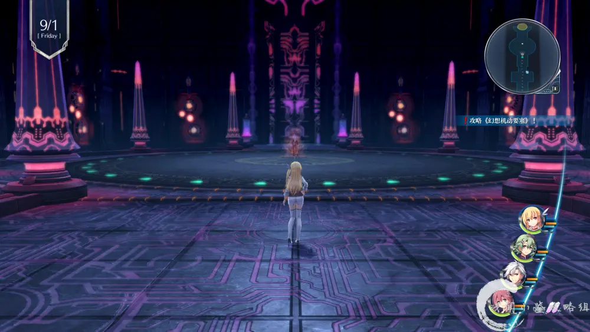
战斗后剧情
★剧情获得艾玛人物信息：外之理
快速移动到幻想机动要塞·小庭园·触发剧情
幻想机动要塞·小庭园
和地图内的绿色星号处的人物·全部对话
★走到绿色星号处·克洛对话·获得克洛人物信息：向前迈进
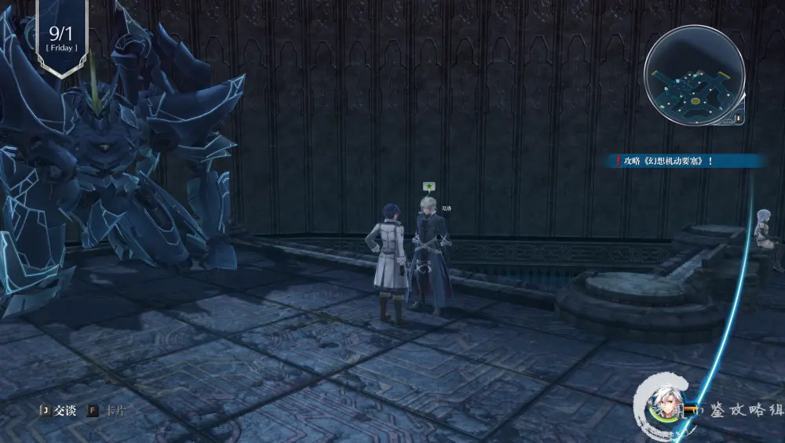
快速移动到幻想机动要塞·中枢中间
幻想机动要塞·中枢中间
全部结束后·走到升降器处·启动
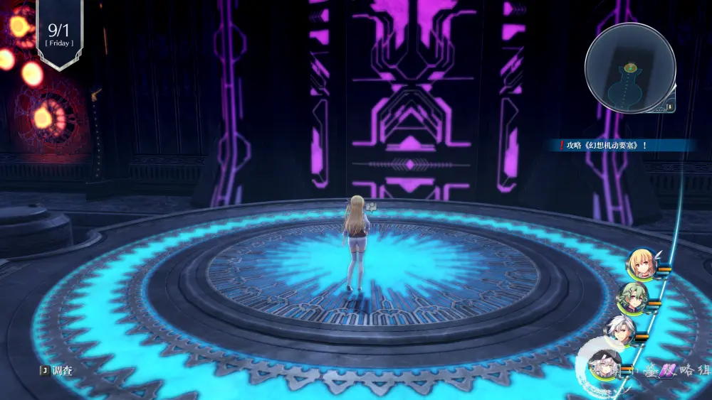
幻想机动要塞·中枢最下层
宝箱4个：勇气灵魂·还魂胶囊·龙神香·修复石/激发石/勇气石/苏生石各1个
本区域无新的敌人
幻想机动要塞·最终地点
特殊回复装置：1个
走到红色感叹号处·触发剧情
★剧情获得莎拉人物信息：最棒的班级
★剧情获得黎恩人物信息：VII班
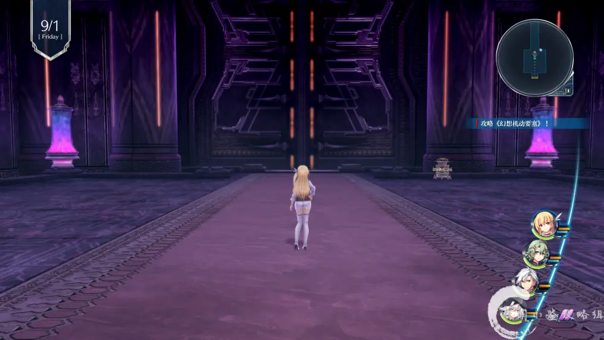
★ARCUSII报告人物笔记
获得：魔力露水/心灵露水各5个·龙神香
获得：托尔兹复兴值5点·累积449点
达成要素【人物笔记报告】
★ARCUSII报告战斗笔记·当前总情报登记数为483
获得：力量露水/守护露水各4个
获得：托尔兹复兴值5点·累积454点
注意：一周目不能报告全部战斗笔记·需要二周目继承战斗笔记后才可进行报告
一定要单独存档！！！·走到红色感叹号处·触发剧情·开启大门进入室内
调整三组人员分配·后续要连战三场·且每场都要胜利
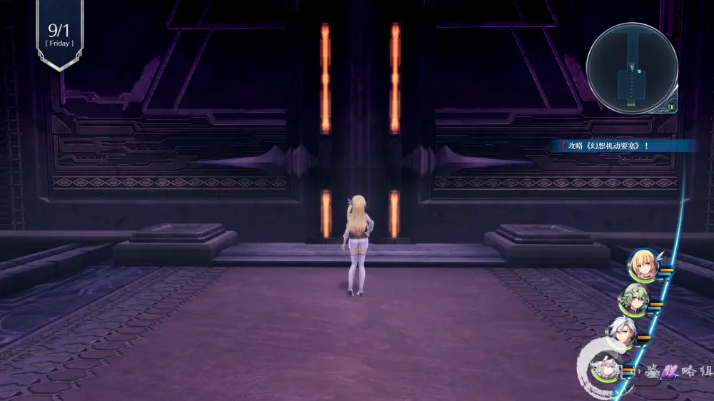
本区域新敌人共1个：铁血奥斯本
记得收集情报
第二场战斗·骑神战
正常状态下：头部
武器立起驱动状态下：手臂
武器高举横指驱动状态下：身体
武器斜下指驱动状态下：手臂
剧情后存档·接着读取刚刚保存的存档·出现选项
从「与黑之骑神的决战后再度开始」·往新的道路《？？？》前进·触发剧情
剧情中出现选项·选择编辑小队
A组需要和BOSS本体战斗
B组需要对付魔法抗性的BOSS
C组需要对付物理抗性的BOSS
编辑好后·返回·开始战斗战斗中记得切换其他两队进行战斗以及收集情报
直接杀死BOSS本体会直接剧情
本区域新敌人共5个：邪神伊修麦格·邪神之巨魔·邪神之煌鸦
阴影之器（邪神伊修麦格战斗中召唤出现）
余晖之器（邪神伊修麦格战斗中召唤出现）
记得收集情报
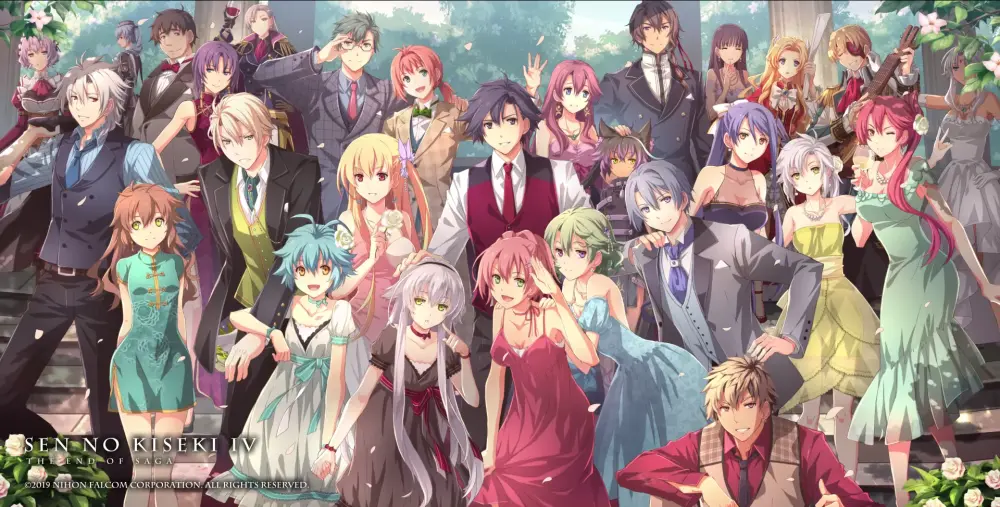
剧情后读取自己保存后的最后一个存档·即英雄传说 闪之轨迹IV·大团圆 会有特殊剧情

完结感言
大家好 我是夏浅线 浅闻小鉴攻略组的第一位成员
英雄传说：轨迹系列是我近几年特别喜欢的单机游戏系列 没有之一
一套系列玩下来 感触良多 一一说起可能不知要说到多久
从英雄传说：零之轨迹开始 见证了克洛斯贝尔的畸形现状
见证了特别任务支援科的坚持和努力
在到英雄传说：碧之轨迹的独立 让本就动荡不堪的克洛斯贝尔更是雪上加霜
在他们应对各现状的同事 在远方的帝国内 又开始了另一段路程
英雄传说：闪之轨迹的开始 黎恩的故事拉开序幕
整套系列玩下来可以说是见证了黎恩的成长历程
他的重心 他的坚持
以及最主要的
他的路
而英雄传说：轨迹系列的故事还在继续
而我希望我们在下一段旅途中 依然有浅闻小鉴攻略组的陪伴
让我来带你们去见证更精彩的故事
关于授权
本攻略除在哔哩哔哩弹幕网外 不会在任何地方再行重复连载
如发现盗转本攻略者 浅闻小鉴攻略组将保留一切法律追究权利
关于付费攻略
攻略为免费攻略 可在哔哩哔哩 UP主 浅闻小鉴攻略组Qwxj 内观看
但Pdf版为付费攻略 仅供各位收藏
为浅闻小鉴攻略组交流群特供
关于Q群
浅闻小鉴攻略组交流①群
907289369
大家对攻略有任何问题/疑问/意见/建议均可来群内讨论
并且欢迎讨论其他的单机游戏
希望我们能成为“新单机圈”的开拓者
关于打赏
如果大家觉得攻略写的还可以 欢迎大家充电支持我们
您的每一次充电 是对攻略组的支持和鞭策
也是对我们作品的认可 以及继续做下去的动力！
小浅在这里先拜谢各位老爷小姐（鞠躬